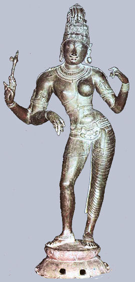
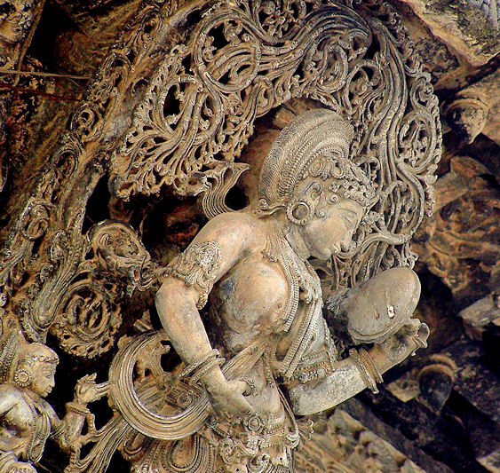
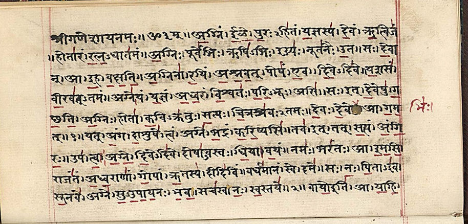

mailto:payer@payer.de
Zitierweise | cite as:
Payer, Alois <1944 - >: Sanskritkurs. -- Lösung der Übungen. -- Übungen Lektion 1 - 5. -- Fassung vom 2009-01-27. -- URL: http://www.payer.de/sanskritkurs/uebung01.htm
Erstmals hier publiziert: 2008-11-28
Überarbeitungen: 2009-03-01 [Verbesserungen] ; 2009-01-27 [Verbesserungen]
Anlass: Lehrveranstaltungen 1980 - 1984
©opyright: Dieser Text steht der Allgemeinheit zur Verfügung. Eine Verwertung in Publikationen, die über übliche Zitate hinausgeht, bedarf der ausdrücklichen Genehmigung des Verfassers
Dieser Text ist Teil der Abteilung Sanskrit von Tüpfli's Global Village Library
Falls Sie die diakritischen Zeichen nicht dargestellt bekommen, installieren Sie eine Schrift mit Diakritika wie z.B. Tahoma.
Die Devanāgarī-Zeichen sind in Unicode kodiert. Sie benötigen also eine Unicode-Devanāgarī-Schrift.
A) Setzen Sie in den folgenden Sätzen unter Beachtung des Sandhi die angegebenen Namen und Nomina ein und bilden Sie Nominalsätze:
1. devas ... (Śiva, Agni, Viṣṇu, Gaṇeśa, Kṛṣṇa, Indra) = देवस् ... (शिव, अग्नि, विष्णु, गणेश, कृष्ण, इन्द्र)
devaḥ śivaḥ. devo 'gniḥ. devo viṣṇuḥ. devo gaṇeśaḥ. devaḥ kṛṣṇaḥ. deva indra.
देवः शिवः | देवो ऽग्निः | देवो विष्णुः | देवो गणेशः | देवः कृष्णः | देव इन्द्रः ||
2. dvijas ... (brāhmaṇa, kṣatriya, vaiśya) = द्विजस् ... (ब्राह्मण, क्षत्रिय, वैश्य)
dvijo brāhmaṇaḥ. dvijaḥ kṣatriyaḥ. dvijo vaiśyaḥ.
द्विजो ब्राह्मणः | द्विजः क्षत्रियः | द्विजो वैश्यः ||
3. gurus ... (brāhmaṇa, Candrakīrti) = गुरुस् ... (ब्राह्मण, चन्द्रकीर्ति)
gurur brāhmaṇaḥ. guruś candrakīrtiḥ.
गुरुर्ब्राह्मणः | गुरुश्चन्द्रकीर्तिः ||
4. vaiśyas ... (Tulādhara) = वैश्यस् ... (तुलाधर)
vaiśyas tulādharaḥ.
वैश्यस्तुलाधरः ||
5. sādhus ... (guru, Rāma) = साधुस् ... (गुरु, राम)
sādhur guruḥ. sādhū rāmaḥ.
साधुर्गुरुः | साधू रामः ||
6. kavis ... (Kālidāsa, Māgha, Bhāravi, Harṣadeva) = कविस् ... (कालिदास, माघ, भारवि, हर्षदेव)
kaviḥ kālidāsaḥ. kavir māghaḥ. kavir bhāraviḥ. kavir harṣadevaḥ.
कविः कालिदासः | कविर्माघः | कविर्भारविः | कविर्हर्षदेवः ||
B) Übersetzen Sie ins Sanskrit:
1. Rāma ist ein Brahmane.
brāhmaṇo rāmaḥ.
ब्राह्मणो रामः |
2. Der Lehrer ist ein vaiśya.
vaiśyo guruḥ.
वैश्यो गुरुः |
3. Der Śūdra ist ein heiliger Mann.
sādhuḥ śūdraḥ.
साधुः शूद्रः |
4. Der Dichter ist der Lehrer.
guruḥ kaviḥ.
गुरुः कविः |
5. Viṣṇu ist der HERR.
īśvaro viṣṇuḥ.
ईश्वरो विष्णुः |
6. Der HERR ist Śiva.
śiva īśvaraḥ.
शिव ईश्वरः |
7. Der Zweimalgeborene ist ein Brahmane.
brāhmaṇo dvijaḥ.
ब्राह्मणो द्विजः |
8. Der heilige Mann ist ein Lehrer.
guruḥ sādhuḥ.
गुरुः साधुः |
9. Der Lehrer ist ein heiliger Mann.
sādhur guruḥ.
साधुर्गुरुः ||

Abb.: īśvaraḥ śivaḥ = ईश्वरः शिवः
Śiva als Adrdhnārīśvara (अर्धनारीश्वर), d.h. in der Gestalt von halb Mann, halb
Frau
[Bildquelle: Wikipedia, Public domain]
A) Setzen Sie folgende Sätze in den Plural:
1. dvijo brāhmaṇaḥ = द्विजो ब्राह्मणः
dvijā brāhmaṇāḥ.
द्वि्जा ब्राह्मणाः |
2. dvijaḥ kṣatriyaḥ = द्विजः क्षत्रियः
dvijāḥ kṣatriyāḥ.
द्विजाः क्षत्रियाः |
3. dvijo vaiśyaḥ = द्विजो वैश्यः
dvijā vaiśyāḥ.
द्विजा वैश्याः |
4. gurur brāhmaṇaḥ = गुरुर्ब्राह्मणः
guravo brāhmaṇāḥ.
गुरवो ब्राह्मणाः |
5. sādhur guruḥ = साधुर्गुरुः
sādhavo guravaḥ.
साधवो गुरवः |
6. guruḥ kaviḥ = गुरुः कविः
guravaḥ kavayaḥ.
गुरवः कवयः |
7. sādhvī brāhmaṇī = साध्वी ब्राह्मणी
sādhvyo brāhmaṇyaḥ.
साध्व्यो ब्राह्मण्यः |
8. devatā guruḥ = देवता गुरुः
devatā guravaḥ.
देवता गुरवः |
9. paśur dhenuḥ = पशुर्धेनुः
paśavo dhenavaḥ.
पशवो धेनवः |
10. gurvī sādhvī = गुर्वी साध्वी
gurvyaḥ sādhvyaḥ.
गुर्व्यः साध्व्यः ||
B) Bilden Sie durch Einsetzen Nominalsätze:
1. śrutis ... (veda) = श्रुतिस् ... वेद
śrutir vedaḥ.
श्रुतिर्वेदः |
2. paśus ... (dhenu) = पशुस् ... धेनु
paśur dhenuḥ.
पशुर्धेनुः |
3. devī ... (durgā, umā, indrāṇī) = देवी ... दुर्गा, उमा, इन्द्राणी
devī durgā. devy umā. devīndrāṇī.
देवी दुर्गा | देव्युमा | देवीन्द्राणी |
4. devatā ... (mīnākṣī, annapūrṇā) = देवता ... मीनाक्षी, अन्नपूर्णा
devatā mīnākṣī. devatānnapūrṇā.
देवता मीनाक्षी | देवतान्नपूर्णा |
5. śūdrā ... (itarā) = शूद्र ... इतरा
śūdretarā.
शूद्रेतरा ||
C) Übertragen Sie ins Femininum:
1. gurur brāhmaṇaḥ = गुरुर्ब्राह्मणः
gurvī brāhmaṇī.
गुर्वी ब्राह्मणी |
2. sādhur guruḥ = साधुर्गुरुः
sādhvī gurvī.
साध्वी गुर्वी |
3. kṣatriyaḥ sādhuḥ = क्षत्रियः साधुः
kṣatriyā sādhvī.
क्षत्रिया साध्वी ||
D) Übersetzen Sie ins Sanskrit:
1. Umā ist eine Göttin.
devy umā.
देव्युमा |
2. Der Veda ist śruti.
śrutir vedaḥ.
श्रुतिर्वेदः |
3. Die Lehrerinnen sind Göttinnen.
devyo gurvyaḥ.
देव्यो गुर्व्यः
4. Milchkühe sind domestizierte Tiere.
paśavo dhenavaḥ.
पशवो धेनवः |
5. Dichter sind Lehrer.
guravaḥ kavayaḥ.
गुरवः कवयः |
6. Kṣatriyas sind Zweimalgeborene.
dvijāḥ kṣatriyāḥ.
द्वि्जाः क्षत्रियाः |
7. Die heiligen Männer sind Śūdras.
śūdrāḥ sādhavaḥ.
शूद्राः साधवः ||
paśur dhenuḥ = पशुर्धेनुः
Indische Zeburinder bei Bangalore
[Bildquelle: mckaysavage. --
http://www.flickr.com/photos/mckaysavage/529395270/. -- Zugriff am
2008-11-27. --
 Creative
Commons Lizenz (Namensnennung) ]
Creative
Commons Lizenz (Namensnennung) ]
A) Bilden Sie mündlich mit folgenden Wörtern Fragen nach dem Schema viṣṇuḥ kaḥ (विष्णुः कः) und beantworten Sie die Fragen auf Sanskrit:
śruti, śiva, brāhmaṇa, dvija (plural), indrāṇī, dhenu, tulādhara, kālidāsa
= श्रुति, शिव, ब्राह्मण, द्विज (बहुवचनम्), इन्द्राणी, धेनु, तुलाधर, कालिदास
śrutiḥ kā? vedaḥ śrutiḥ.
श्रुतिः का । वेदः श्रुतिः ।
śivaḥ kaḥ? īśvaraḥ śivaḥ.
शिवः कः । ईश्वरः शिवः ।
brāhmaṇaḥ kaḥ? dvijo brāhmaṇaḥ.
ब्राह्मणः कः । द्विजो ब्राह्मणः ।
dvijāḥ ke? brāhmānakṣatriyavaiśyā dvijāḥ.
द्विजाः के । ब्राह्मणक्षत्रियवैश्या द्विजाः ।
indrāṇī kā? devīndrāṇī.
इन्द्राणी का । देवीन्द्राणी ।
dhenuḥ kā? paśur dhenuḥ.
धेनुः का । पशुर्धेनुः ।
tulādharaḥ kaḥ? vaiśyas tulādharaḥ.
तुलाधरः कः । वैश्यस्तुलाधरः ।
kālidāsaḥ kaḥ? kaviḥ kālidāsaḥ.
कालिदासः कः । कविः कालिदासः ॥
B) Bilden Sie zur folgenden Leseübung Fragen nach dem Muster etat kim (एतत्किम्) und beantworten Sie die Fragen mit den angegebenen Wörtern und Demonstrativpronomen z.B. eṣa bālaḥ (एष बालः):

eṣa kaḥ? eṣa gajaḥ / ayaṃ gajaḥ / sa gajaḥ.
एष कः । एष गजः । अयं गजः । स गजः ।
eṣā kā? eṣā bālā / iyaṃ bālā / sā bālā.
एषा का । एषा बाला । इयं बाला । सा बाला ।
etad kim? eṣa śukaḥ.
एतत्किम् । एष शुकः ।
etat kim? eṣa kākaḥ.
एतत्किम् । एष काकः ।
etat kim? eṣā peṭikā.
एतत्किम् । एषा पेटिका ।
etat kim? eṣā lātā.
एतत्किम् । एषा लाता ।
etat kim? eṣa pādaḥ.
एतत्किम् । एष पादः ।
eṣa kaḥ? eṣa bālaḥ.
एष कः । एष बालः ।
etat kim? eṣā pipīlikā.
एतत्किम् । एषा पिपीलिका ॥
Abb.: etat kim? eṣa kākaḥ. एतत्किम् | एष काकः ||
Glanzkrähen (Corvus splendens), Rājasthān (राजस्थान)
[Bildquelle: Duncan Wright / Wikipedia. -- GNU FDLizenz]
A) Übersetzen Sie folgende Sätze und Komposita und lösen Sie die darin vorkommenden Dvandvas in Sanskrit auf:
1. catvāro varṇā brāhmaṇakṣatriyavaiśyaśūdrāḥ. (Āpastambīyadharmasūtra I,1,1,4 = Vāsiṣṭhadharmaśāstra II,1)
चत्वारो वर्णा ब्राह्मणक्षत्रियवैश्यशूद्राः ||
Erklärung catvāras = चत्वारस् = "vier"
Brahmanen, Kṣatriyas, Vaiśyas und Śūdras sind die vier Stände.
catvāro varnā brāhmaṇaḥ kṣatriyo vaiśyaḥ śūdraś ca / catvāro varṇā brāhmaṇāḥ kṣatriyā vaiśyāḥ śūdrāś ca.
चत्वारो वर्णा ब्राह्मणः क्षत्रियो वश्यः शूद्रश्च । चत्वारो वर्णब्राह्मणाः क्षत्रिया वश्याः शूद्राश्च ।
2. trayo varṇā dvijātayo brāhmaṇakṣatriyavaiśyāḥ. (Vāsiṣṭhadharmaśāstra II,1)
त्रयो वर्णा द्विजातयो ब्राह्मणक्षत्रियवैश्याः ||
Erklärung: trayas = त्रयस् = "drei"
Brahmanen, Kṣatriyas, und Vaiśyas sind die drei zweimalgeborenen Stände.
trayo varṇā dvijātayo brāhmaṇaḥ kṣatriyo vaiśyaś ca / trayo varṇā dvijātayo brāhmaṇāḥ kṣatriyā vaiśyāś ca.
त्रयो वर्णा द्विजातयो ब्राह्मणः क्षत्रियो वैश्यश्च । त्रयो वर्णाद्विजातयो ब्राह्मणाः क्षत्रिया वैश्याश्च ।
3. sāmavedargvedayajurvedās trayī. (Kauṭilīya-arthaśāstra 1.3.1.) (in gutem Sanskrit: sāmargyajurvedās trayī)
सामवेदर्ग्वेदयजुर्वेदास्त्रयी ||
(in gutem Sanskrit: सामर्ग्यजुर्वेदास्त्रयी)
Die drei Veden sind: Sāmavaeda, Ṛgveda und Yajurveda.
sāmaveda ṛgvedo yajurvedaś ca trayī.
सामवेद ऋग्वेदो यजुर्वेदश्च त्रयी ।
4. Die drei Feinde des Menschen, die das Tor zur Hölle bilden (Viṣṇusmṛti 33,1+6): kāmakrodhalobhāḥ
कामक्रोधलोभाः ||
Leidenschaft, Zorn und Gier.
kāmaḥ krodho lobhaś ca.
कामः क्रोधो लोभश्च ।
5. maitrīkaruṇāmuditopekṣāś catvāro brahmavihārāḥ.
मैत्रीकरुणामुदितोपेक्षाश्चत्वारो ब्रह्मविहाराः ||
Erklärung: brahmavihāra: "Verweilungszustände Brahmas", auch "Unermessliche" genannt: unbegrenzte Haltungen. Sie stellen buddhistische Meditationsformen dar, mit denen der Meditierende allmählich, schrittweise die ganze Wirklichkeit "durchstrahlt". Auch im Yoga (Yogasūtra 1,33) spielen diese vier eine Rolle beim Zurruhekommen des Bewusstseins.
Die grenzenlosen Haltungen sind: Wohlwollen, Mitgefühl, Mitfreude und Gleichmut.
maitrī karuṇā muditopekṣā ca catvāro brahmavihārāḥ.
मैत्री करुणा मुदितोपेक्षा च चत्वारो ब्रह्मविहाराः ।
6. avidyāsmitārāgadveṣābhiniveṣāḥ pañca kleśāḥ. (Yogasūtra 2,3)
अविद्यास्मितारागद्वेषाभिनिवेषाः पञ्च क्लेशाः ||
Erklärung: pañca = "fünf"
Die fünf Plagen sind: Unwissenheit, Ichsucht, Gier, Hass und Körperbezogenheit.
avidyāsmitā rāgo dveṣo 'bhiniveṣaś ca pañca kleśāḥ.
अविद्यास्मिता रागो द्वेषो ऽभिनिवेषश्च पञ्च क्लेशाः ।
7. ānvīkṣikītrayīvārttādaṇḍanitayo vidyāḥ. (Nach Kauṭilīya-arthaśāstra 1.2.1.)
आन्वीक्षिकीत्रयीवार्त्तादण्डनितयो विद्याः ||
Wissenschaften sind Philosophie, Vedistik, Ökonomie und Politik.
ānvīkṣikī trayī vārttā daṇḍanītiś ca vidyāḥ.
आन्वीक्षिकी त्रयी वार्त्ता दण्डनीतिश्च विद्याः ।

Abb.: abhiniveśo na vā ? = अभ्निवेशो न
वा । Körperbezogenheit oder nicht ? -- das ist hier dies Frage
"Schöne mit dem Spiegel", Belur (ಬೇಲೂರು),
Karnataka (ಕರ್ನಾಟಕ)
[Bildquelle: ~Panache. --
http://www.flickr.com/photos/enamor/278398152/. -- Zugriff am 2008-11-28. --

 Creative
Commons Lizenz (Namensnennung, keine kommerzielle Nutzung)]
Creative
Commons Lizenz (Namensnennung, keine kommerzielle Nutzung)]
A) Übersetzen Sie:
1. vidyā vārttā.
विद्या वार्त्ता |
Ökonomie ist eine Wissenschaft.
2. brāhmaṇaḥ kṣatriyo vaiśyaś ca trayo varṇā dvijātayaḥ.
ब्राह्मणः क्षत्रियो वैश्यश्च त्रयो वर्णा द्विजातयः |
Die drei zweimalgeborenen Stände sind: Brahmane, Kṣatriya und Vaiśya.
3. dvijā vaiśyāḥ. (2 Möglichkeiten)
द्विजा वैश्याः |
Vaiśyas sind Zweimalgeborene / Vaiśyafrauen sind Zweimalgeborene.
B) Setzen Sie die entsprechende Form ein:
(dvija, sādhu, kavi) ... rāmaḥ
(द्विज, साधु, कवि) ... रामः |
dvijo rāmaḥ. sādhū rāmaḥ. kavī rāmaḥ.
द्विजो रामः । साधू रामः । कवी रामः ।
(devī) ... indrāṇī
(देवी) ... इन्द्राणी |
devīndrāṇī.
देवीन्द्राणी ।
dvijātayas ... (vaiśyā, kṣatriya)
द्विजातयस् ... (वैश्या, क्षत्रिय) |
dvijātayo vaiśyāḥ. dvijātayaḥ kṣatriyāḥ.
द्विजातयो वश्याः । द्विजातयः क्षत्रियाः ॥
C) Lösen Sie das Kompositum in folgendem Satz in Sanskrit auf und bilden Sie mit dieser aufgelösten Form denselben Satz:
sāmargyajurvedās trayī.
सामर्ग्यजुर्वेदास्त्रयी |
sāmaveda ṛgvedo yajurvedaś ca trayī / ... yajurvedas trayī
सामवेद ऋग्वेदो यजुर्वेदश्च त्रयी । ... यजुर्वेदस्त्रयी ॥
D) Übersetzen Sie auf zwei Weisen ins Sanskrit (einmal mit einem Kompositum, einmal ohne):
"Verweilungszustände Brahmas" sind: freundliches Wohlwollen, Mitgefühl, Mitfreude, Gleichmut.
maitrīkaruṇāmuditopekṣā brahmavihārāḥ. maitrī karunā muditopekṣā (ca) brahmavihārāḥ.
मैत्रीकरुणामुदितोपेक्षा ब्रह्मविहाराः । मैत्री करुणा मुदितोपेक्षा (च) ब्रह्मविहाराः ॥

Abb.: ṛgvedaḥ = ऋग्वेदः
Ṛgveda-Manuskript, frühes 19. Jhdt. n. Chr.
[Bildquelle: Wikipedia. Public domain]
Zu Lösung der Übungen Lektion 6 - 10